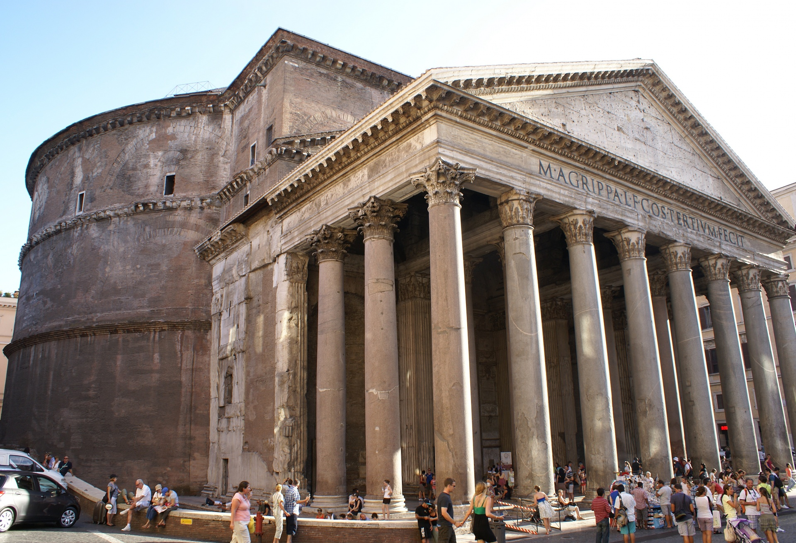

Rome is a culturally and historically rich city. We can appreciate it in the numerous monuments of the city.
Lois Varela
18/10/2022
The Pantheon is one of the most recognisable monuments in history. It is a former Roman temple and since 609 AD, a Catholic church. It was built circa 126 AD by the commision of emperor Hadrian replacing an older temple that was burnt down.
Image of the Pantheon, by Enzo Abramo
The Colosseum is an oval amphitheatre in the center of the city of Rome, just east of the Roman Forum. It is the largest ancient amphitheatre ever built and the largest standing amphitheatre in the world today. It's contruction began in 72 AD and was completed in 80 AD.
The structure is interesting by itself but the numerous activities done within make even more interesting. In the Colosseum, gladiatorial shows, venatios (animal hunts), naumachiae or navalia proelia (simulated sea battles) and sylvae (natural recreations) were hosted.
Image of the Pantheon by Enzo Abramo under license CC0 Public Domain